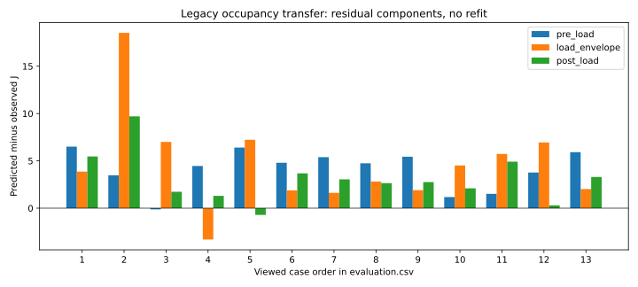

후보 미채택. 평균 절대11.877J·최대31.704J. 새 독립 확인0.
기존 개발3세션만 적합했습니다. 이미 본 온라인13세션을 사후 평가했으며 AP/서비스·기본 경로는 변경하지 않았습니다.

평균 차이의60.7%는 부하 전·후 유휴 구간에 있습니다. 산술 분해이며 물리적 원인 확정이나 미래 전력 보정이 아닙니다.
근거·재현·다음 작업 · 전이 결과 · 구간 분해 · 개발창 · 사전 계약